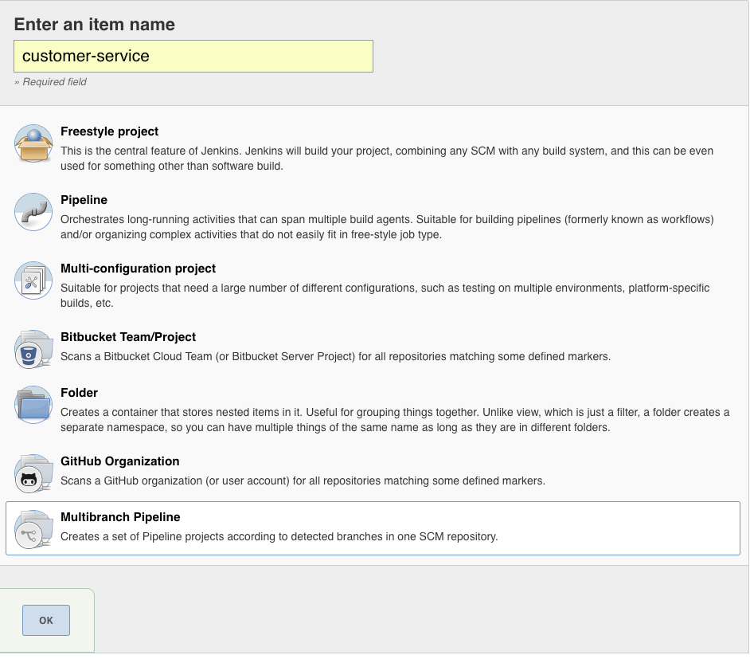
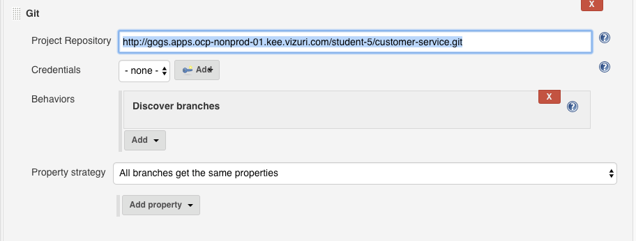
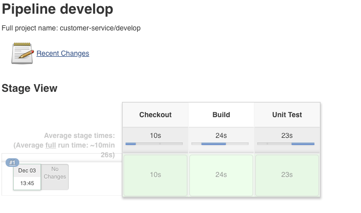

In this lab, you will create a Jenkins Pipeline Job that checks out a SpringBoot microservice project and builds a JAR archive.
Create Jenkinsfile for Build
Log into the Gogs.
http://gogs.apps.ocpws.kee.vizuri.com
Click on the customer-service repository.
Create a new file in the root of the customer-service repository called Jenkinsfile with the following contents.
def app_name = "customer";
def nexusUrl = "http://nexus-student-55-cicd.apps.ocpws.kee.vizuri.com;
def release_number;
node ("maven-podman") {
stage('Checkout') {
echo "In checkout"
checkout scm
if(BRANCH_NAME ==~ /(release.*)/) {
def tokens = BRANCH_NAME.tokenize( '/' )
branch_name = tokens[0]
branch_release_number = tokens[1]
release_number = branch_release_number
}
else {
sh (
script: "mvn -B help:evaluate -Dexpression=project.version | grep -e '^[^\\[]' > release.txt",
returnStdout: true,
returnStatus: false
)
release_number = readFile('release.txt').trim()
echo "release_number: ${release_number}"
}
}
stage('Build') {
echo "In Build"
sh "mvn -s configuration/settings.xml -Dnexus.url=${nexusUrl} -DskipTests=true -Dbuild.number=${release_number} clean install"
}
stage ('Unit Test') {
sh "mvn -s configuration/settings.xml -Dnexus.url=${nexusUrl} -Dbuild.number=${release_number} test"
junit "target/surefire-reports/*.xml"
step([$class: 'XUnitBuilder',
thresholds: [
[$class: 'FailedThreshold', unstableThreshold: '1']
],
tools: [
[$class: "JUnitType", pattern: "target/surefire-reports/*.xml"]
]])
}
stage('SonarQube Analysis') {
withSonarQubeEnv('sonar') { sh "mvn -s configuration/settings.xml -Dnexus.url=${nexusUrl} -Dbuild.number=${release_number} sonar:sonar" }
}
stage("Quality Gate"){
timeout(time: 1, unit: 'HOURS') {
def qg = waitForQualityGate()
if (qg.status != 'OK') {
error "Pipeline aborted due to quality gate failure: ${qg.status}"
}
}
}
stage('Deploy Build Artifact') {
sh "mvn -s configuration/settings.xml -DskipTests=true -Dbuild.number=${release_number} -Dnexus.url=${nexusUrl} deploy"
}
}
Configure Jenkins Job to Build Code
Log into Jenkins.
http://jenkins-student-55-cicd.apps.ocpws.kee.vizuri.com
Click on New Item.
Enter the following values:
Enter an Item Name: customer-service
Choose: Multibranch pipeline

Click OK to Create the customer-service project.
Under Branch Sources, click Add source->Git.
Enter the following values:

Click Save.
This will trigger a build of you develop branch. Navigate to customer-service->develop to see the status of the build.
The Job should execute three stages; Checkout, Build and Unit Test.
